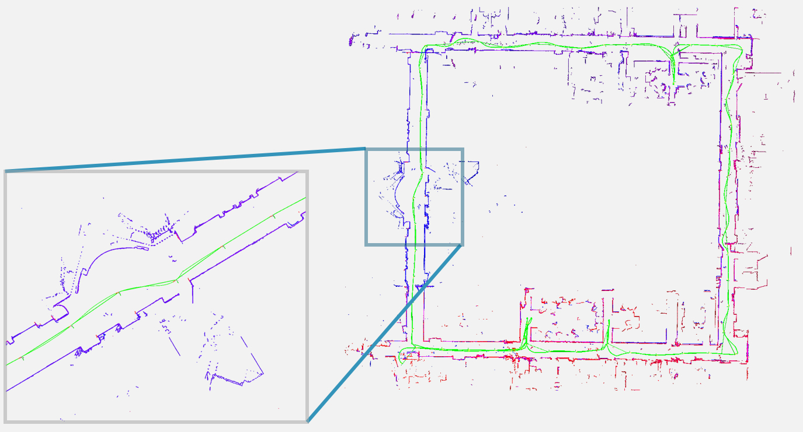

Hi, I'm Qianyue He, graphics and HPC enthusiast with a passion for coding. I pursue projects driven by curiosity rather than commercial intent—the joy of creation and mastery is my primary reward. Knowledge gained along the way is simply a bonus.
I am a master in AI (EE) at
Tsinghua SIGS
, working on time-of-flight rendering. I earned my Bachelor of Engineering in Automation from
XJTU
, where I grew significantly as an engineer with the help of mentors and peers. My undergrad journey was fulfilling—I spent two years (2020–2021) in my school’s
RoboMaster
team (vision group lead in 2021), developing an auto-targeting system, followed by two years at
IAIR
working on CV and SLAM.
In my free time, I contribute to open-source projects, particularly in rendering and ray tracing. I’ve modified frameworks like
Mitsuba
,
PBRT
, and
Tungsten
, and built two renderers:
AdaPT
and
cuda-pt
. Since 2024, I’ve also served as a pro-tem moderator for
Computer Graphics StackExchange
, supporting the community.
My focus is shifting toward foundational work in AI infrastructure and compilers—fascinating fields, aren’t they? Exploration is the priority now; after all, youth is the best time to dive into the unknown.
Got married to my junior & senior high classmate in my 24! She is such a heavenly girl.
Brilliant idea from
@AdamYuan
during his last year of undergrad. Rejected, and since neither of us wanted to continue working on 3DGS, we decided to make it open-sourced.
Time-Resolved Rendering Methods for Complex Scattering Scenes
Master thesis (109 pages) in Tsinghua SIGS
This thesis presents advanced ToF rendering techniques for complex scattering scenes, addressing efficiency and accuracy challenges. A diffusion-approximation importance sampling method improves radiance approximation, reducing errors by ~20%. An elliptical path-constrained strategy minimizes rejection rates, cutting errors by ~25% and rejections by ~7×. A GPU-accelerated system further boosts performance and reduces noise.

Chain-representation-based real time high precision single line LiDAR SLAM system
Bachelor thesis (61 pages) in XJTU
In this thesis, a novel map representation named Chain Representation is proposed. This representation is sort of a mixture that has both the advantages of point cloud and occupancy map. The proposed SLAM system is compared against the SoTA method (in 2022): Google's cartographer, SLAM toolbox and the classic GMapping. The proposed method demonstrates faster mapping, higher accuracy and lower memory overhead. The code is not currently open-sourced.
A CUDA software ray tracing renderer
from scratch
: a renderer with Analysis-Driven Optimization. The core logic and basic building blocks are all written from scratch in CUDA, and they are carefully profiled and optimized to have better performance. Definitely not a naive porting of CPU implementation. Megakernel path tracing, light tracing and wavefront path tracing are supported. Volumetric and time-of-flight rendering supported, with
distributed parallel renderer
available (by PyTorch DDP and nanobind python bindings). Time-Resolved rendering is also supported.
A physically based renderer built in Taichi lang (python-like, JIT). This offline renderer supports steady state and transient state rendering, with undirectional, volumetric and bidirectional path tracing implementation. Textures, heterogeneous RGB density volumes and different kinds of emitters are supported. Customized Mitsuba-like XML scene parsing, with stackless SAH-LBVH ray-primitive acceleration.
Two different versions of 2D LiDAR simulators. The first version is written in C++, with OpenCV and ROS Rviz visualization. Supports exporting ROS bags of scan data, IMU data and etc.. The second version is written in Rust and CUDA, with nannou as its front-end visualization and GUI and CUDA based accelerated ray-intersection code as simulation backend. Both support map editting and customization.
The first big project of mine, written during the first year of my undergrad. I love this rougelike game very much: I extracted the assets from an old mobile rougelike game called
Dweller
and rewrite all the game play in PyGame. The GUI and some of the art assets are designed and drawn on my own. I poured much time and effort into this, and till today, I can still say that it beats most of the undergrad Graduation Designs in our country (since most of them are so shitty).
6-axis robot simulation in rviz and Gazebo, control implemented with ROS. Simple hand-deduced D-H forward-inverse kinematics implemented in Eigen. Simulated and visualized in RViz and Gazebo ROS implementation (melodic), with key control.
GAIIC 2023: giga-pixel novel view synthesis competition 4th place solution. Based on nerfstudio. The other two contributors are
Dinnger
and
funnymudpeer
. The ranks can be found in giga-vision's leaderboard for rendering challenge. The competition focuses on the novel-view synthesis problem under vast scenes and huge input images. We reproduced many SoTA works in this repo to obtain higher PSNR.
This PyTorch repository implements the reproduction of Neural Radiance Fields (NeRF) with distributed parallel learning and rendering, featuring many important works of early NeRF developments: Ref-NeRF (CVPR 2022), Mip-NeRF (ICCV 2021), Mip-NeRF 360 (CVPR 2022), and Info-NeRF for few-shot learning, with optimizations like proposal network distillation and weight regularization to improve rendering efficiency and quality.
This repo is built upon LSMv2, therefore inherently has the feature of mouse/keyboard control, map editting and single-line ray-trace. However, FMCW requires two more features: recursive tracing to simulate multi-bounce & frequency domain FFT ops and Doppler velocity calcutation. These features are added, with several simple built-in BSDFs available. The front-end is also supported by Rust nannou, the recursive tracing and 2D BSDFs is implemented in CUDA while FFT module is written in C++.